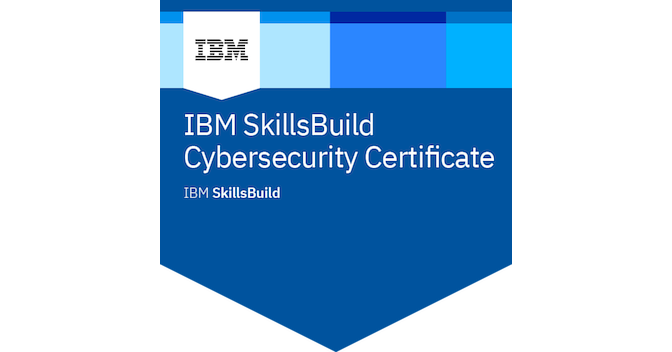

Certifications
My professional certifications and achievements in cybersecurity and technology.

Introduction to Cybersecurity
Cisco • 2025
Entry-level cybersecurity certification validating foundational knowledge in cybersecurity principles and best practices.

IBM SkillBuild — Cybersecurity(IN VIEW)
IBM SkillBuild • 2025
A practical certificate covering cybersecurity fundamentals and hands-on labs through IBM's SkillBuild.(IN VIEW)

Professional Foundations Certificate
ALX • 2025
Earned the ALX Professional Foundations Certificate, demonstrating strong skills in communication, problem-solving, adaptability,team work and professional collaboration..